Monument
Gare ferroviaire historique
Édifice colonial aux allures de château, l'âme de la ville et le témoin vivant de l'épopée Dakar-Niger.
« Un village, deux gares »
Ancien village du Cayor devenu carrefour ferroviaire majeur, Thiès s'est développée au rythme du chemin de fer pour devenir l'une des principales villes du Sénégal.
Située sur le plateau de Thiès, au cœur de l'ancien royaume du Cayor, la ville n'était à l'origine qu'un modeste village sérère. Sa position stratégique entre Dakar et l'intérieur du pays allait toutefois jouer un rôle décisif dans son développement.
L'installation d'un poste militaire français en 1863, puis l'arrivée du chemin de fer Dakar–Saint-Louis à la fin du XIXe siècle transforment progressivement Thiès. La ville devient une étape essentielle du réseau colonial, avant de s'imposer comme l'un des principaux centres ferroviaires du Sénégal avec la construction de la ligne Dakar–Niger et le développement de vastes ateliers de maintenance.
Érigée en commune en 1904, Thiès connaît une forte croissance portée par les activités ferroviaires, administratives et militaires. Les quartiers résidentiels, les infrastructures publiques et les grands axes urbains qui caractérisent encore la ville aujourd'hui se développent durant cette période.
La ville occupe également une place importante dans l'histoire politique et sociale du Sénégal. Thiès a notamment été marquée par les luttes des cheminots, dont la célèbre grève de 1947, qui demeure un événement majeur de la mémoire ouvrière ouest-africaine.
En 1956, Léopold Sédar Senghor, futur premier président du Sénégal indépendant, devient maire de Thiès. Dix ans plus tard, sa vision culturelle donnera naissance aux Manufactures Sénégalaises des Arts Décoratifs (MSAD), aujourd'hui encore reconnues pour leurs tapisseries de renommée internationale.
Surnommée la Capitale du Rail, Thiès conserve un patrimoine unique mêlant histoire ferroviaire, architecture coloniale, artisanat d'art et grandes avenues arborées. Moins effervescente que Dakar mais idéalement située entre la capitale, l'AIBD et la Petite Côte, elle demeure l'une des portes d'entrée privilégiées vers le cœur du Sénégal.
« Benn Deuk, Ñaari Gaar » - « Un village, deux gares ». Pendant des décennies, Thiès a abrité simultanément la gare de la ligne Dakar–Saint-Louis (1885) et celle de la ligne Dakar-Niger (1924). Une singularité qui a forgé son surnom de Capitale du Rail.
Senghor fut d'abord maire de Thiès en 1956, avant de devenir le premier président du Sénégal en 1960.
L'ancien site ferroviaire abrite aujourd'hui le Musée des Rails, mémoire vivante du rail sénégalais.
En 1947, la grève des 20 000 cheminots d'Afrique de l'Ouest - dont Thiès fut l'épicentre - a marqué durablement la conscience ouvrière et indépendantiste du Sénégal.
Monuments, lieux historiques et espaces naturels qui racontent l'âme de Thiès. Cliquez sur une fiche pour découvrir l'histoire complète du lieu.
Édifice colonial aux allures de château, l'âme de la ville et le témoin vivant de l'épopée Dakar-Niger.
Le lieu historique où naissent les tapisseries au point d'Aubusson, un savoir-faire artisanal rare né d'un projet culturel de Senghor en 1966.
Consacrée en 1945, siège du diocèse depuis 1969 — témoin d'un dialogue interreligieux apaisé.
Un quartier historique construit au début du XXe siècle pour loger les administrateurs coloniaux et les cheminots.
Des alignements d'arbres centenaires créent des voûtes naturelles au-dessus des rues. Une signature paysagère de la ville.
Un ensemble d'ateliers réunissant sculpteurs, tisserands et maroquiniers. Un lieu vivant dédié à l'artisanat local.
Un monument en hommage à Lat Dior Ngoné Latyr Diop, dernier souverain du Cayor et figure majeure de la résistance à la colonisation.
Un lieu d'échange incontournable de la ville. On y trouve des produits frais, des épices, des tissus et de l'artisanat local.
Un espace naturel entouré de verdure, connu pour sa faune aviaire et apprécié pour les promenades en plein air.
Installé dans l'ancien Fort Faidherbe, il retrace l'histoire du Cayor, du Baol et la résistance à la colonisation.
Ancienne Place de France réhabilitée en 2024 — un espace de mémoire ouvrière devenu lieu de flânerie au cœur de la ville.
Inauguré en 1979 par Senghor, ce stade porte le nom du héros de la résistance et accueille aujourd'hui les grandes rencontres sportives.
Un voyage culinaire au cœur de la région.Découvrez quelques spécialités sénégalaises que vous pourrez déguster à Thiès et dans sa région.
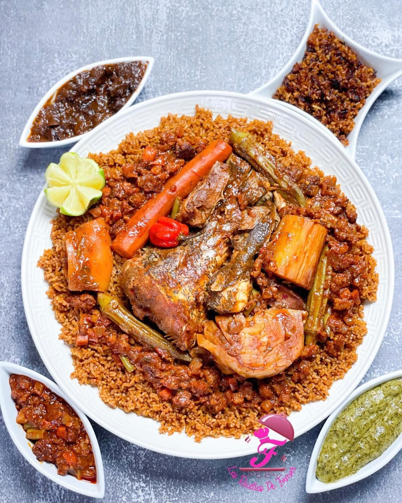
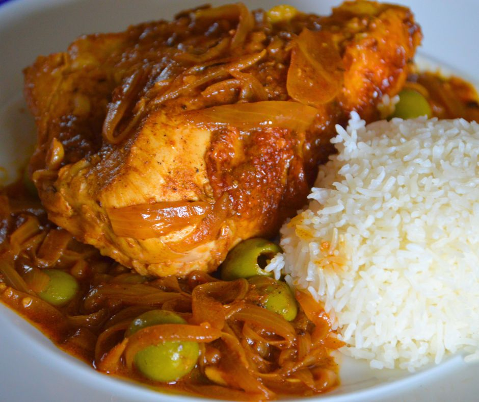
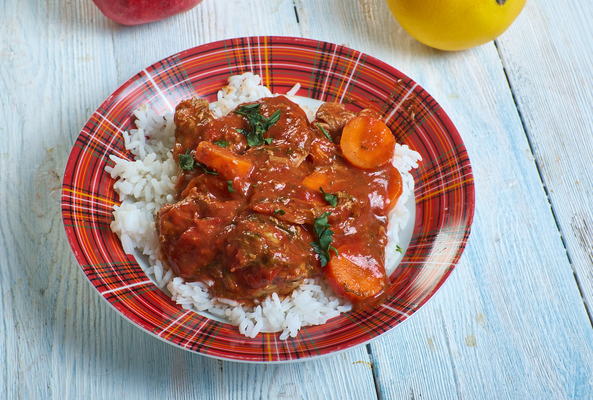
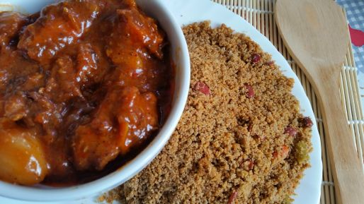
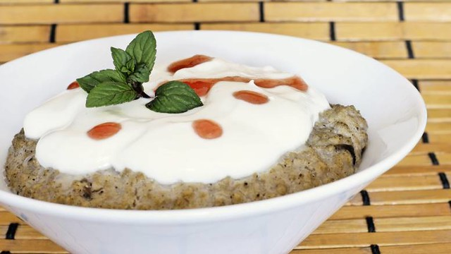
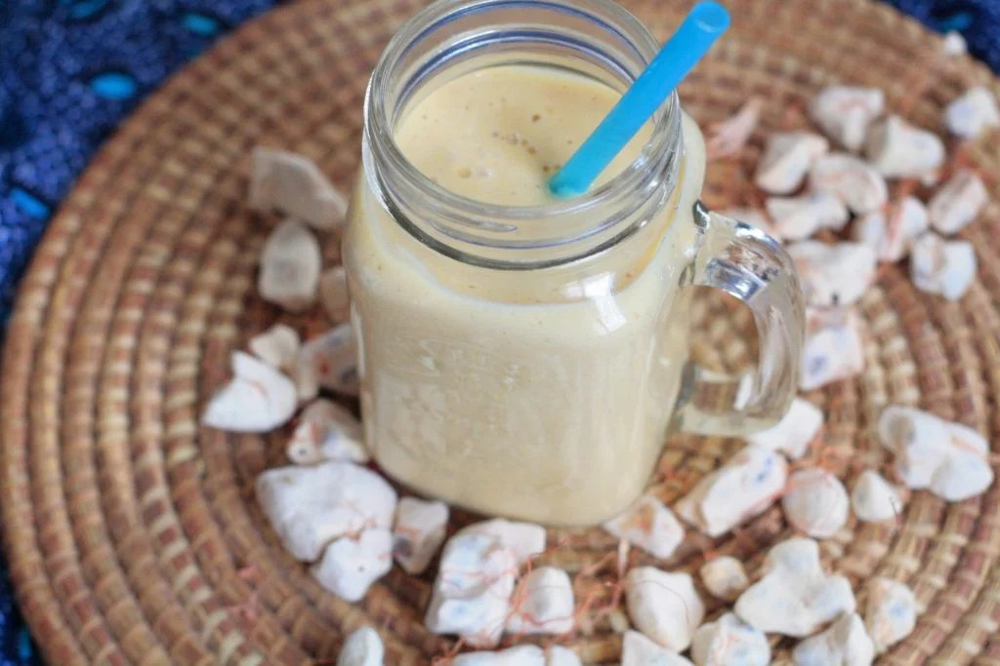
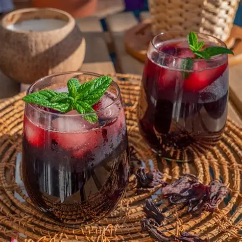
Visages, gestes, détails et instants de vie : un regard intime sur la ville, à travers l'œil de celles et ceux qui la font vibrer au quotidien.
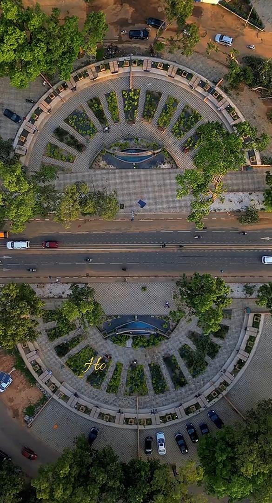
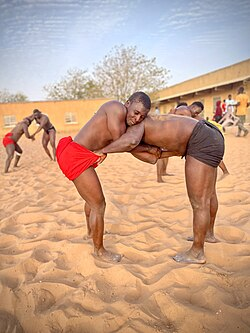
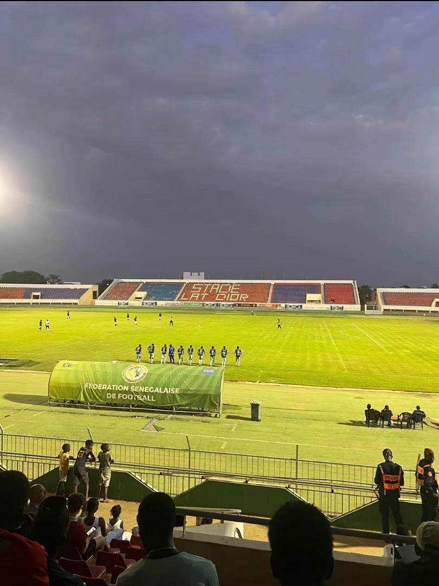
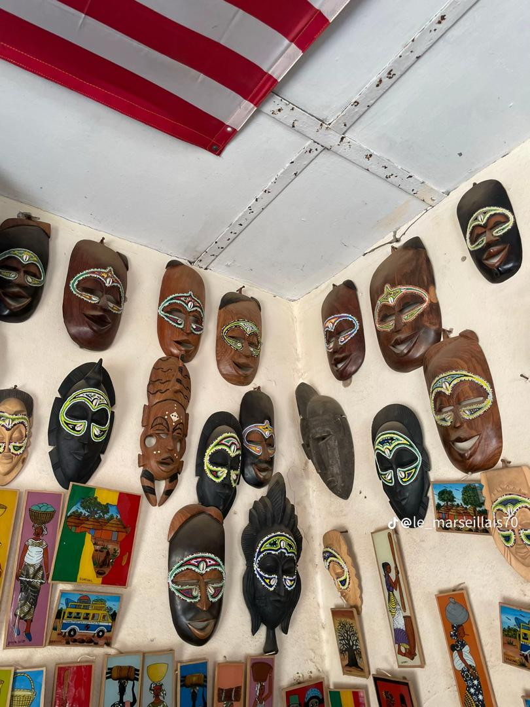
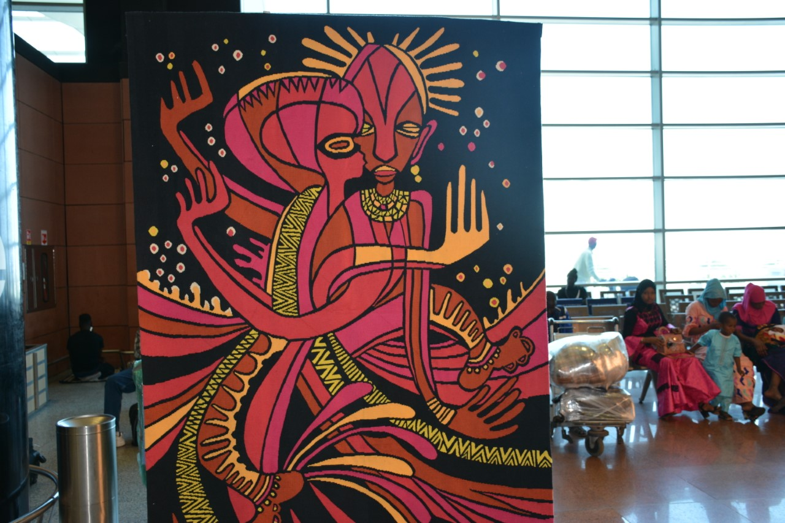
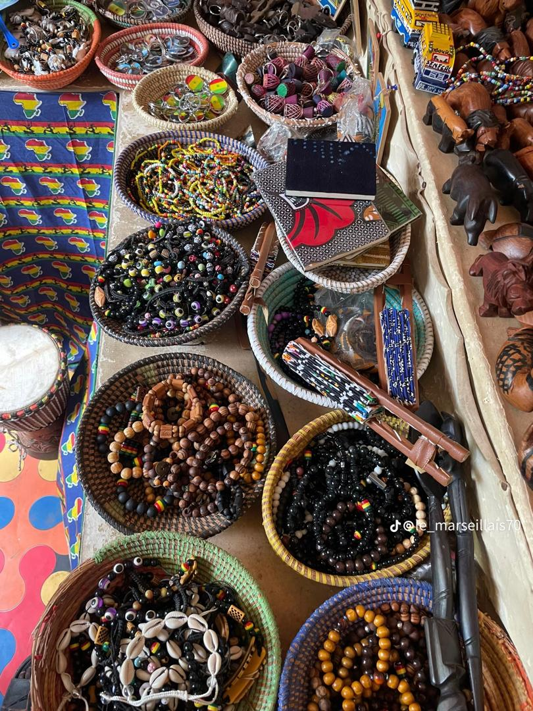
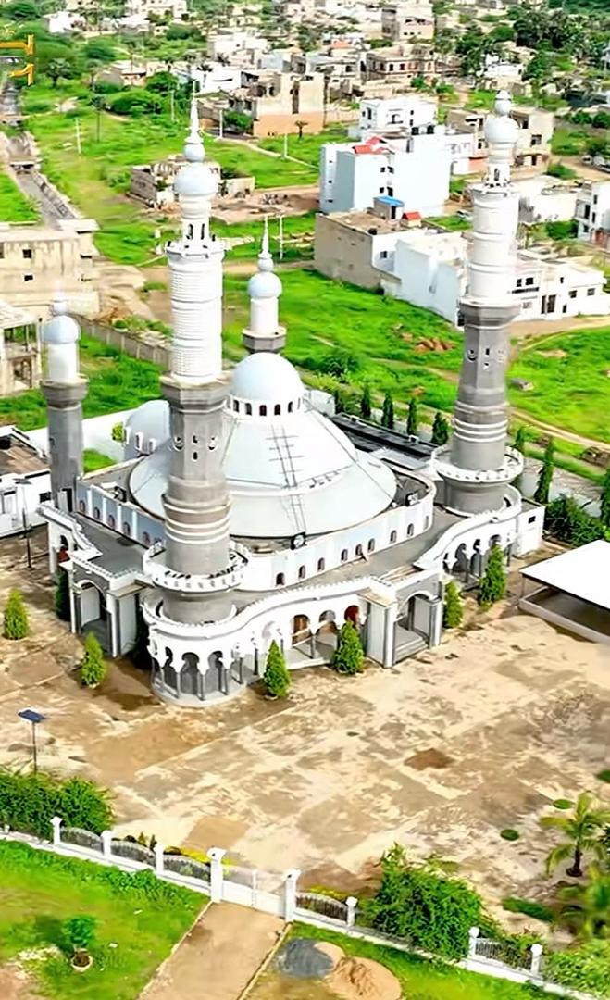
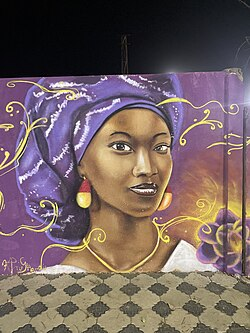
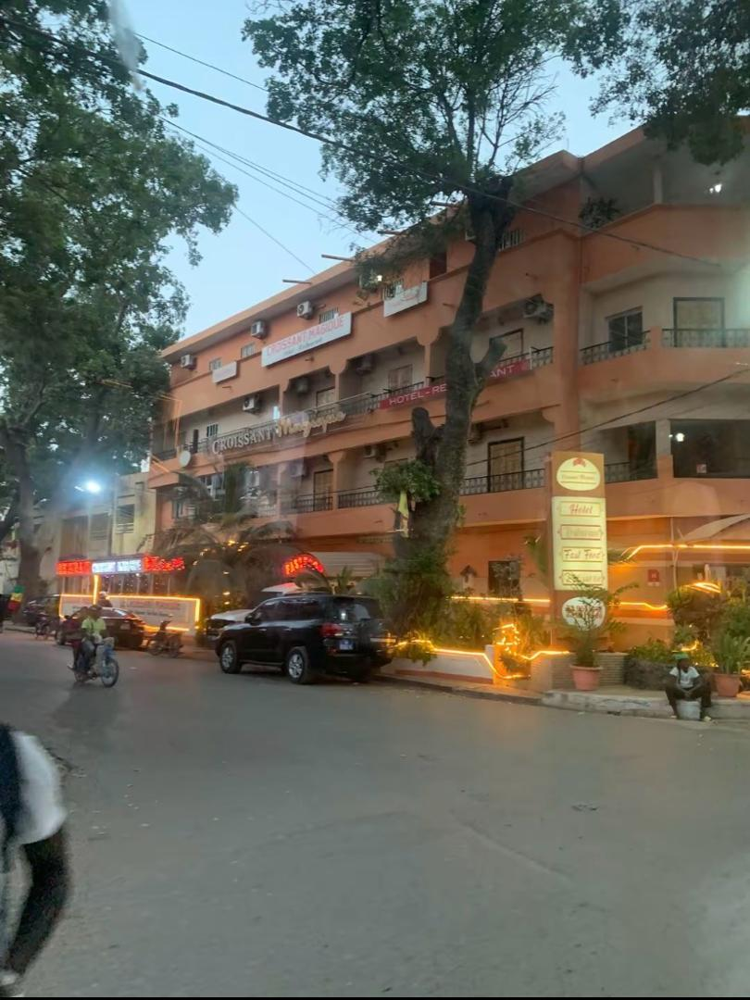
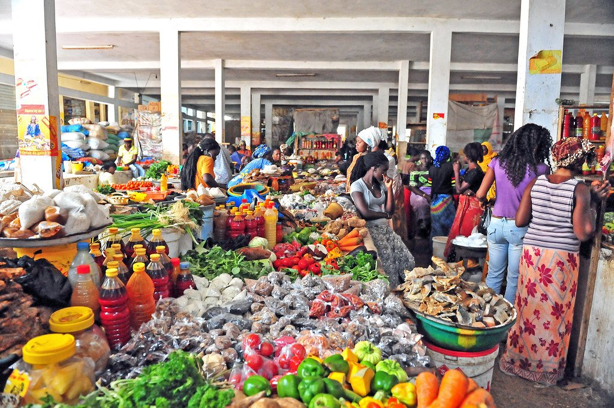
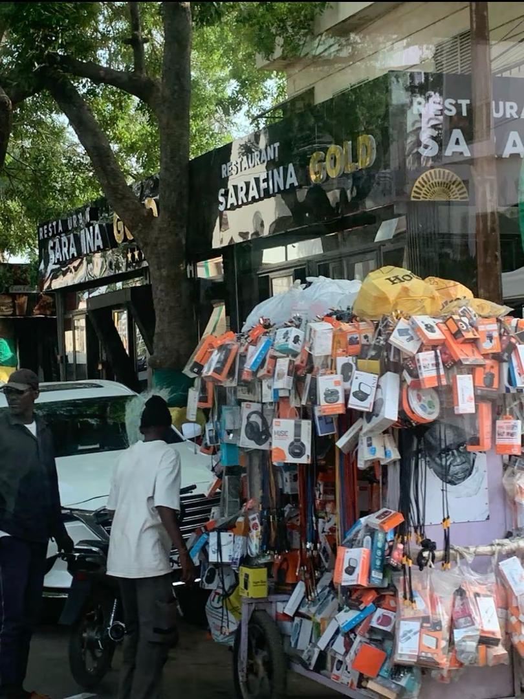
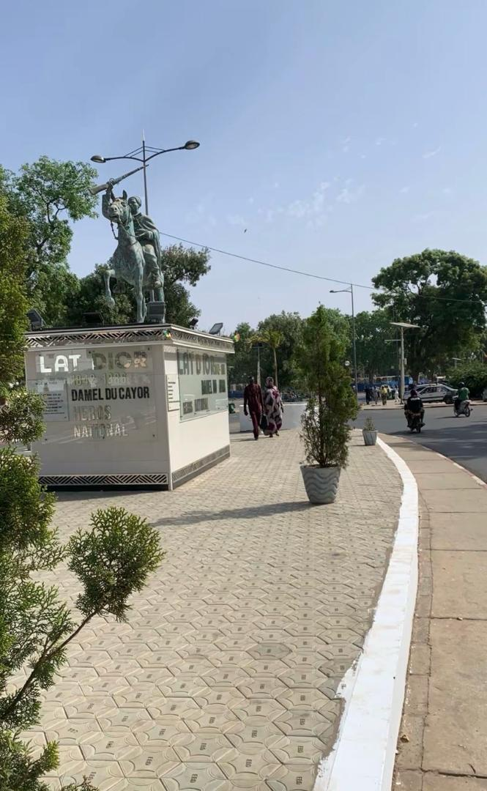
Thiès bénéficie d'un climat sahélien doux. La saison sèche (novembre–mai) est idéale pour explorer la ville, entre températures agréables et ciel dégagé.
Thiès est un carrefour stratégique : accessible en train, en voiture ou en avion, elle est la porte d'entrée idéale pour explorer le centre du Sénégal.
Le Train Express Régional (TER) relie Dakar à l'aéroport international Blaise-Diagne. Depuis l'aéroport, Thiès est rapidement accessible par route ou taxi.
Thiès est accessible depuis Dakar par la route nationale. Son emplacement en fait un important carrefour entre la capitale, la Petite Côte, Saint-Louis et l'intérieur du pays.
L'aéroport international Blaise-Diagne constitue la principale porte d'entrée aérienne vers Thiès. Des taxis et services de transport permettent de rejoindre facilement la ville.
Taxis, cars rapides et "Tata" desservent toute la ville et les communes alentour. Tarifs abordables.
Des retours authentiques de voyageurs ayant exploré la région, collectés sur des plateformes communautaires.
Amazing day. very beautiful reserve with good staff. very knowleadgeble guide and super friendly. we loved how the animals were freely roaming.
Nous rentrons d’un séjour de 10 nuits à Thies à la Somone dans l’hôtel Royal Baobab. Superbe séjour, superbe hôtel !
Surprenante découverte de ce lieu d’art et de culture. A visiter absolument pour connaître une autre facette du Sénégal.
Eagles, cormorants, fish, oyster beds, oyster fisher women and shallow lagoon waters surrounded by massive mangroves. Best done late afternoon so you can have a beer at Chez Rasta.
Notre géoportail vous permet d'explorer interactivement la ville et toute la région : sites, hébergements, restaurants, itinéraires, mesure de distances, export PDF.
Dernière mise à jour des données : Octobre 2026.